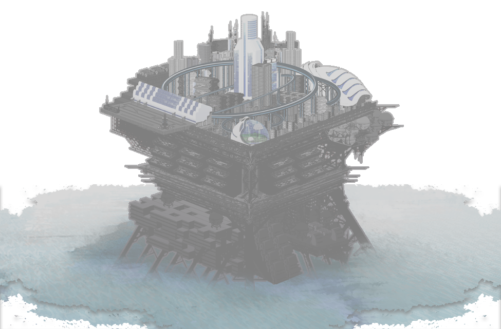

ここは能力者たちの箱庭。
鉄でできた世界樹（ユグドラシル）。
不自由な自由を、どうぞお楽しみ下さい。
どこかの世界の遠い未来。
科学技術が目覚ましい発展を遂げるその世界に、自然を超越した現象を引き起こす者が現れ始めた。
【超能力者】と呼ばれる彼らは、様々な動乱を経て【ある人工島】に隔離される。
エクシードを支配・収容する強制送致の社会システムは、一世紀を跨いだ現在もなお続いている。
当初は強制収容所でしかなかったはずのその島は、
世代を重ねて少しずつ変化していき、いつしか一つの国と変わらないほどの社会基盤を構築するに至った。
今も異能者たちは、島内で様々な葛藤を抱えながら日々を過ごしている。
人工島の名は――【ユグドラシル】。
司法機関【グングニル】、民主機構【オルレアン】、抑制機構【テセウス】をはじめとして、様々な組織・機関がこの人工島で動いている。
階層ごとの格差や能力者と非能力者との格差・差別が残る中、能力者による犯罪も後を絶たない。
――あなたはこの世界で、どう生きるのか――
●基本データ
建設は西暦2045年――つまり今年で建設から100年になる。
- 総人口
- 約210万人
- 面積
- 約100㎢ × 3
- 建設年
- 西暦2045年
建設は西暦2045年――つまり今年で建設から100年になる。
●構造
元々自然に存在した島を土台とし、その上を覆う形で人工島部分が建設されている。
広さにしておよそ100㎢ほどのプラントが三つ積み重なっているような構図をイメージしてもらいたい。
広さにしておよそ100㎢ほどのプラントが三つ積み重なっているような構図をイメージしてもらいたい。
三つの階層はそれぞれ、上層【アースガルズ】、中層【ミズガルズ】、下層【ヘルヘイム】と呼称され、
これがユグドラシルという島の基本構造となっている。
（ただし、厳密には下記するように4層の構造物である。普段意識されることはないが）
これがユグドラシルという島の基本構造となっている。
（ただし、厳密には下記するように4層の構造物である。普段意識されることはないが）
ベースとなった自然島にあたるエリアは、現在廃棄されている。
過去、異能者による暴動の後に監獄自体がバイオハザードによって汚染されたためだと言われている。
……ところが、このエリアに関する各資料は不自然に抹消されており、広く緘口令が敷かれている。
エリア封鎖自体がかなり昔の出来事ということも手伝い、このエリアについて詳しいところを知る者は誰もいない。
過去、異能者による暴動の後に監獄自体がバイオハザードによって汚染されたためだと言われている。
……ところが、このエリアに関する各資料は不自然に抹消されており、広く緘口令が敷かれている。
エリア封鎖自体がかなり昔の出来事ということも手伝い、このエリアについて詳しいところを知る者は誰もいない。
●地理
地理的に何処へ位置するかは一般に知らされておらず、また外界からも公開されていない。
特殊な技術を用いて隠匿されているのではないかとも推測されているが、無論憶測でしかなく、確証はない。
少なくともニブルヘイム近海から他の大陸が望めないのは確かである。
特殊な技術を用いて隠匿されているのではないかとも推測されているが、無論憶測でしかなく、確証はない。
少なくともニブルヘイム近海から他の大陸が望めないのは確かである。
夏季の平均最高気温はおよそ20-25℃、冬季の平均最低気温は0-5℃。
気候的には温帯海洋性（Cfb）――つまり、一年を通して気温は安定している。
ただし、冬季は天候が荒れる傾向にあり、寒波や嵐の影響で降雪がたびたび発生する。
また、海に囲まれている関係で一年を通し多湿である。それ故、夏は気温以上に蒸し暑い。
湿度の関係で入浴頻度も高く、入浴周りの観念・文化は日本人のそれに近しいようだ。
気候的には温帯海洋性（Cfb）――つまり、一年を通して気温は安定している。
ただし、冬季は天候が荒れる傾向にあり、寒波や嵐の影響で降雪がたびたび発生する。
また、海に囲まれている関係で一年を通し多湿である。それ故、夏は気温以上に蒸し暑い。
湿度の関係で入浴頻度も高く、入浴周りの観念・文化は日本人のそれに近しいようだ。
地理的な関係で災害には強いらしく、台風も地震も滅多に起こらない。
しかし近年は様々な要因から想定以上に地震や台風、隕石が頻発しているようだ。
おかしいなぁ（棒）。
しかし近年は様々な要因から想定以上に地震や台風、隕石が頻発しているようだ。
おかしいなぁ（棒）。
●人口
総人口は210万人ほどで、人口比率は上層25%、中層40%、下層35%。
人間だけではなく、異能や実験によって生まれた亜人や自我を獲得したアンドロイド・ロボットも多数存在する。
人間だけではなく、異能や実験によって生まれた亜人や自我を獲得したアンドロイド・ロボットも多数存在する。
異能者の比率はノーマル6割、異能者4割といったところで、比率としてはノーマルの方が多数派になる。
島を運営する側の人間として入植したノーマルも多い他、異能者同士の子供が必ず異能者になるとも限らないためだ。
創設当初から世代を重ね、発展した結果である。
島を運営する側の人間として入植したノーマルも多い他、異能者同士の子供が必ず異能者になるとも限らないためだ。
創設当初から世代を重ね、発展した結果である。
なお、異能者が多くいるとはいえ、やはり超能力は畏怖の対象である。
場所や状況によっては差別対象にもなり得る事は覚えておいて頂きたい。
場所や状況によっては差別対象にもなり得る事は覚えておいて頂きたい。